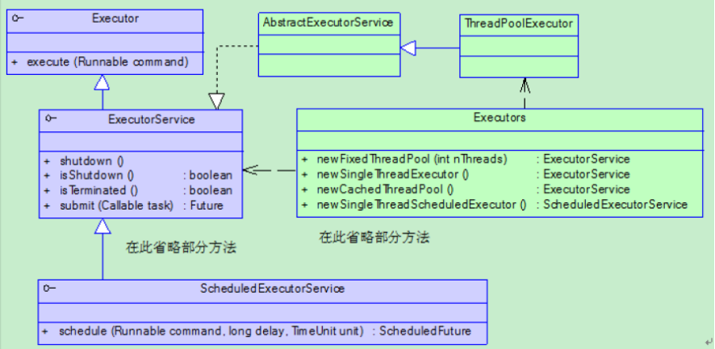
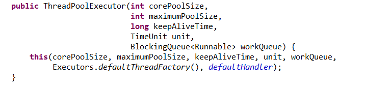
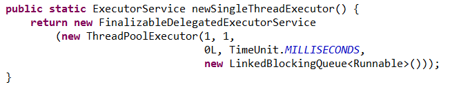
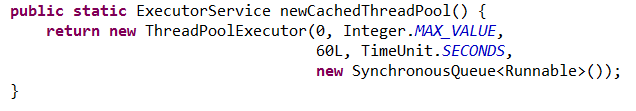
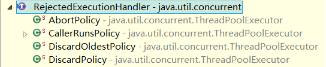

原文连接:https://www.cnblogs.com/bingyimeiling/p/11637097.html
线程池
无限制的创建线程
若采用"为每个任务分配一个线程"的方式会存在一些缺陷，尤其是当需要创建大量线程时：
- 线程生命周期的开销非常高
- 资源消耗
- 稳定性
引入线程池
任务是一组逻辑工作单元，线程则是使任务异步执行的机制。当存在大量并发任务时，创建、销毁线程需要很大的开销，运用线程池可以大大减小开销。
Executor框架

说明：
- Executor 执行器接口，该接口定义执行Runnable任务的方式。
- ExecutorService 该接口定义提供对Executor的服务。
- ScheduledExecutorService 定时调度接口。
- AbstractExecutorService 执行框架抽象类。
- ThreadPoolExecutor JDK中线程池的具体实现。
- Executors 线程池工厂类。
ThreadPoolExecutor 线程池类
线程池是一个复杂的任务调度工具，它涉及到任务、线程池等的生命周期问题。要配置一个线程池是比较复杂的，尤其是对于线程池的原理不是很清楚的情况下，很有可能配置的线程池不是较优的。
JDK中的线程池均由ThreadPoolExecutor类实现。其构造方法如下：

参数说明：
corePoolSize：核心线程数。
maximumPoolSize：最大线程数。
keepAliveTime：线程存活时间。当线程数大于core数，那么超过该时间的线程将会被终结。
unit：keepAliveTime的单位。java.util.concurrent.TimeUnit类存在静态静态属性： NANOSECONDS、MICROSECONDS、MILLISECONDS、SECONDS
workQueue：Runnable的阻塞队列。若线程池已经被占满，则该队列用于存放无法再放入线程池中的Runnable。
另一个构造方法：
ThreadPoolExecutor(int corePoolSize, int maximumPoolSize, long keepAliveTime, TimeUnit unit,BlockingQueue<Runnable> workQueue, RejectedExecutionHandler handler)
该方法在下面的扩展部分有更深入的讲解。其中handler表示线程池对拒绝任务的处理策略。
ThreadPoolExecutor的使用需要注意以下概念：
-
若线程池中的线程数量小于corePoolSize，即使线程池中的线程都处于空闲状态，也要创建新的线程来处理被添加的任务。 -
若线程池中的线程数量等于 corePoolSize且缓冲队列 workQueue未满，则任务被放入缓冲队列。 -
若线程池中线程的数量大于corePoolSize且缓冲队列workQueue满，且线程池中的数量小于maximumPoolSize，则建新的线程来处理被添加的任务。 -
若线程池中线程的数量大于corePoolSize且缓冲队列workQueue满，且线程池中的数量等于maximumPoolSize，那么通过 handler所指定的策略来处理此任务。 - 当线程池中的线程数量大于corePoolSize时，如果某线程空闲时间超过keepAliveTime，线程将被终止。
Executors 工厂方法
JDK内部提供了五种最常见的线程池。由Executors类的五个静态工厂方法创建。
- newFixedThreadPool(...)
- newSingleThreadExecutor(...)
- newCachedThreadPool(...)
- newScheduledThreadPool(...)
- newSingleThreadScheduledExecutor()
单线程的线程池 newSingleThreadExecutor
这个线程池只有一个线程在工作，也就是相当于单线程串行执行所有任务。

返回单线程的Executor，将多个任务交给此Exector时，这个线程处理完一个任务后接着处理下一个任务，若该线程出现异常，将会有一个新的线程来替代。此线程池保证所有任务的执行顺序按照任务的提交顺序执行。
说明：LinkedBlockingQueue会无限的添加需要执行的Runnable。
创建固定大小的线程池 newFixedThreadPool
每次提交一个任务就创建一个线程，直到线程达到线程池的最大大小。线程池的大小一旦达到最大值就会保持不变，如果某个线程因为执行异常而结束，那么线程池会补充一个新线程。
public static ExecutorSevice newFixedThreadPool()
返回一个包含指定数目线程的线程池，如果任务数量多于线程数目，那么没有没有执行的任务必须等待，直到有任务完成为止。
可缓存的线程池 newCachedThreadPool
如果线程池的大小超过了处理任务所需要的线程，那么就会回收部分空闲（60秒不执行任务）的线程，当任务数增加时，此线程池又可以智能的添加新线程来处理任务。此线程池不会对线程池大小做限制，线程池大小完全依赖于操作系统（或者说JVM）能够创建的最大线程大小。

newCachedThreadPool方法创建的线程池可以自动的扩展线程池的容量。核心线程数量为0。
SynchronousQueue是个特殊的队列。 SynchronousQueue队列的容量为0。当试图为SynchronousQueue添加Runnable，则执行会失败。只有当一边从SynchronousQueue取数据，一边向SynchronousQueue添加数据才可以成功。SynchronousQueue仅仅起到数据交换的作用，并不保存线程。但newCachedThreadPool()方法没有线程上限。Runable添加到SynchronousQueue会被立刻取出。
根据用户的任务数创建相应的线程来处理，该线程池不会对线程数目加以限制，完全依赖于JVM能创建线程的数量，可能引起内存不足。
定时任务调度的线程池 newScheduledThreadPool
创建一个大小无限的线程池。此线程池支持定时以及周期性执行任务的需求。
例：
public class ScheduledThreadPoolTest {
public static void main(String[] args) {
ScheduledExecutorService ses = Executors.newScheduledThreadPool(10);
ses.scheduleWithFixedDelay(new Runnable() {
@Override
public void run() {
try {
Thread.sleep(1000);
} catch (InterruptedException e) {
e.printStackTrace();
}
System.out.println(new Date());
}
}, 1000, 2000, TimeUnit.MILLISECONDS);
}
}单线程的定时任务调度线程池 newSingleThreadScheduledExecutor
此线程池支持定时以及周期性执行任务的需求。
Executor接口
Executor是一个线程执行接口。任务执行的主要抽象不是Thead，而是Executor。
public interface Executor{
void executor(Runnable command);
}
Executor将任务的提交过程与执行过程解耦，并用Runnable来表示任务。执行的任务放入run方法中即可，将Runnable接口的实现类交给线程池的execute方法，作为它的一个参数。如果需要给任务传递参数，可以通过创建一个Runnable接口的实现类来完成。
Executor可以支持多种不同类型的任务执行策略。
Executor基于生产者消费者模式，提交任务的操作相当于生产者，执行任务的线程则相当于消费者。
ExecutorService接口
线程池接口。ExecutorService在Executor的基础上增加了一些方法，其中有两个核心的方法：
Future<?> submit(Runnable task)
<T> Future<T> submit(Callable<T> task)
这两个方法都是向线程池中提交任务，它们的区别在于Runnable在执行完毕后没有结果，Callable执行完毕后有一个结果。这在多个线程中传递状态和结果是非常有用的。另外他们的相同点在于都返回一个Future对象。Future对象可以阻塞线程直到运行完毕（获取结果，如果有的话），也可以取消任务执行，当然也能够检测任务是否被取消或者是否执行完毕。
在没有Future之前我们检测一个线程是否执行完毕通常使用Thread.join()或者用一个死循环加状态位来描述线程执行完毕。现在有了更好的方法能够阻塞线程，检测任务执行完毕甚至取消执行中或者未开始执行的任务。
ScheduledExecutorService接口
ScheduledExecutorService描述的功能和Timer/TimerTask类似，解决那些需要任务重复执行的问题。这包括延迟时间一次性执行、延迟时间周期性执行以及固定延迟时间周期性执行等。当然了继承ExecutorService的ScheduledExecutorService拥有ExecutorService的全部特性。
线程池生命周期
线程是有多种执行状态的，同样管理线程的线程池也有多种状态。JVM会在所有线程（非后台daemon线程）全部终止后才退出，为了节省资源和有效释放资源关闭一个线程池就显得很重要。有时候无法正确的关闭线程池，将会阻止JVM的结束。
线程池Executor是异步的执行任务，因此任何时刻不能够直接获取提交的任务的状态。这些任务有可能已经完成，也有可能正在执行或者还在排队等待执行。因此关闭线程池可能出现一下几种情况：
- 平缓关闭：已经启动的任务全部执行完毕，同时不再接受新的任务。
- 立即关闭：取消所有正在执行和未执行的任务。
另外关闭线程池后对于任务的状态应该有相应的反馈信息。
启动线程池
线程池在构造前（new操作）是初始状态，一旦构造完成线程池就进入了执行状态RUNNING。严格意义上讲线程池构造完成后并没有线程被立即启动，只有进行"预启动"或者接收到任务的时候才会启动线程。
线程池是处于运行状态，随时准备接受任务来执行。
关闭线程池
线程池运行中可以通过shutdown()和shutdownNow()来改变运行状态。
- shutdown()：平缓的关闭线程池。线程池停止接受新的任务，同时等待已经提交的任务执行完毕，包括那些进入队列还没有开始的任务。shutdown()方法执行过程中，线程池处于SHUTDOWN状态。
- shutdownNow()：立即关闭线程池。线程池停止接受新的任务，同时线程池取消所有执行的任务和已经进入队列但是还没有执行的任务。shutdownNow()方法执行过程中，线程池处于STOP状态。shutdownNow方法本质是调用Thread.interrupt()方法。但我们知道该方法仅仅是让线程处于interrupted状态，并不会让线程真正的停止！所以若只调用或只调用一次shutdownNow()方法，不一定会让线程池中的线程都关闭掉，线程中必须要有处理interrupt事件的机制。
线程池结束
一旦shutdown()或者shutdownNow()执行完毕，线程池就进入TERMINATED状态，即线程池就结束了。
- isTerminating() 如果关闭后所有任务都已完成，则返回 true。
- isShutdown() 如果此执行程序已关闭，则返回 true。
例：使用固定大小的线程池。并将任务添加到线程池。
import java.util.concurrent.Executors;
import java.util.concurrent.ExecutorService;
public class JavaThreadPool {
public static void main(String[] args) {
// 创建一个可重用固定线程数的线程池
ExecutorService pool = Executors.newFixedThreadPool(2);
// 创建实现了Runnable接口对象，Thread对象当然也实现了Runnable接口
Thread t1 = new MyThread();
Thread t2 = new MyThread();
Thread t3 = new MyThread();
Thread t4 = new MyThread();
Thread t5 = new MyThread();
// 将线程放入池中进行执行
pool.execute(t1);
pool.execute(t2);
pool.execute(t3);
pool.execute(t4);
pool.execute(t5);
// 关闭线程池
pool.shutdown();
}
}
class MyThread extends Thread {
@Override
public void run() {
System.out.println(Thread.currentThread().getName() + "正在执行。。。");
}
}Java线程池扩展
ThreadPoolExecutor线程池的执行监控
ThreadPoolExecutor中定义了三个空方法，用于监控线程的执行情况。
ThreadPoolExecutor源码：
protected void beforeExecute(Thread t, Runnable r) { }
protected void afterExecute(Runnable r, Throwable t) { }
protected void terminated() { }例：使用覆盖方法，定义新的线程池。
public class ExtThreadPoolTest {
static class MyTask implements Runnable {
public String name;
public MyTask(String name) {
super();
this.name = name;
}
@Override
public void run() {
try {
Thread.sleep(500);
System.out.println("执行中:"+this.name);
Thread.sleep(500);
} catch (InterruptedException e) {
e.printStackTrace();
}
}
}
public static void main(String[] args) throws InterruptedException {
ExecutorService es = new ThreadPoolExecutor(5,5,0,TimeUnit.MILLISECONDS,new LinkedBlockingQueue<Runnable>()){
@Override
protected void beforeExecute(Thread t, Runnable r) {
System.out.println("准备执行:" + ((MyTask)r).name);
}
@Override
protected void afterExecute(Runnable r, Throwable t) {
System.out.println("执行完成:" + ((MyTask)r).name);
}
@Override
protected void terminated() {
System.out.println("执行退出");
}
};
for(int i=0;i<5;i++){
MyTask task = new MyTask("Task-"+i);
es.execute(task);
}
Thread.sleep(10); // 等待terminated()执行
es.shutdown(); // 若无该方法，主线程不会结束。
}
}ThreadPoolExecutor的拒绝策略
线程池不可能处理无限多的线程。所以一旦线程池中中需要执行的任务过多，线程池对于某些任务就无法处理了。拒绝策略即对这些无法处理的任务进行处理。可能丢弃掉这些不能处理的任务，也可能用其他方式。
ThreadPoolExecutor类还有另一个构造方法。该构造方法中的RejectedExecutionHandler 用于定义拒绝策略。
public ThreadPoolExecutor(int corePoolSize,
int maximumPoolSize,
long keepAliveTime,
TimeUnit unit,
BlockingQueue<Runnable> workQueue,
ThreadFactory threadFactory,
RejectedExecutionHandler handler) {
.....
}JDK内部已经提供一些拒绝策略。

AbortPolicy 一旦线程不能处理，则抛出异常。
AbortPolicy源码：
public static class AbortPolicy implements RejectedExecutionHandler {
/**
* Creates an {@code AbortPolicy}.
*/
public AbortPolicy() { }
/**
* Always throws RejectedExecutionException.
*
* @param r the runnable task requested to be executed
* @param e the executor attempting to execute this task
* @throws RejectedExecutionException always.
*/
public void rejectedExecution(Runnable r, ThreadPoolExecutor e) {
throw new RejectedExecutionException("Task " + r.toString() +
" rejected from " +
e.toString());
}
}
DiscardPolicy 一旦线程不能处理，则丢弃任务。
DiscardPolicy源码：
public static class DiscardPolicy implements RejectedExecutionHandler {
/**
* Creates a {@code DiscardPolicy}.
*/
public DiscardPolicy() { }
/**
* Does nothing, which has the effect of discarding task r.
*
* @param r the runnable task requested to be executed
* @param e the executor attempting to execute this task
*/
public void rejectedExecution(Runnable r, ThreadPoolExecutor e) {
}
}
CallerRunsPolicy 一旦线程不能处理，则将任务返回给提交任务的线程处理。
CallerRunsPolicy源码：
public static class CallerRunsPolicy implements RejectedExecutionHandler {
/**
* Creates a {@code CallerRunsPolicy}.
*/
public CallerRunsPolicy() { }
/**
* Executes task r in the caller's thread, unless the executor
* has been shut down, in which case the task is discarded.
*
* @param r the runnable task requested to be executed
* @param e the executor attempting to execute this task
*/
public void rejectedExecution(Runnable r, ThreadPoolExecutor e) {
if (!e.isShutdown()) {
r.run();
}
}
}
DiscardOldestPolicy 一旦线程不能处理，丢弃掉队列中最老的任务。
DiscardOldestPolicy源码：
public static class DiscardOldestPolicy implements RejectedExecutionHandler {
/**
* Creates a {@code DiscardOldestPolicy} for the given executor.
*/
public DiscardOldestPolicy() { }
/**
* Obtains and ignores the next task that the executor
* would otherwise execute, if one is immediately available,
* and then retries execution of task r, unless the executor
* is shut down, in which case task r is instead discarded.
*
* @param r the runnable task requested to be executed
* @param e the executor attempting to execute this task
*/
public void rejectedExecution(Runnable r, ThreadPoolExecutor e) {
if (!e.isShutdown()) {
e.getQueue().poll();
e.execute(r);
}
}
}
例：自定义拒绝策略。打印并丢弃无法处理的任务。
public class RejectedPolicyHandleTest {
public static void main(String[] args) throws InterruptedException {
ExecutorService es = new ThreadPoolExecutor(5,5,0,TimeUnit.MILLISECONDS,new SynchronousQueue<Runnable>(),Executors.defaultThreadFactory(),new RejectedExecutionHandler() {
@Override
public void rejectedExecution(Runnable r, ThreadPoolExecutor executor) {
// 打印并丢弃。
System.out.println(r.toString()+" is discard");
}
});
for(int i=0;i<Integer.MAX_VALUE;i++){
MyTask task = new MyTask("Task-"+i);
es.execute(task);
Thread.sleep(10);
}
es.shutdown(); // 若无该方法，主线程不会结束。
}
}
ThreadFactory 线程工厂
ThreadPoolExecutor类构造器的参数其中之一即为ThreadFactory线程工厂。
ThreadFactory用于创建线程池中的线程。
public interface ThreadFactory {
Thread newThread(Runnable r);
}
ThreadFactory的实现类中一般定义线程了线程组，线程数与线程名称。
DefaultThreadFactory源码：

static class DefaultThreadFactory implements ThreadFactory {
private static final AtomicInteger poolNumber = new AtomicInteger(1);
private final ThreadGroup group;
private final AtomicInteger threadNumber = new AtomicInteger(1);
private final String namePrefix;
DefaultThreadFactory() {
SecurityManager s = System.getSecurityManager();
group = (s != null) ? s.getThreadGroup() :
Thread.currentThread().getThreadGroup();
namePrefix = "pool-" +
poolNumber.getAndIncrement() +
"-thread-";
}
public Thread newThread(Runnable r) {
Thread t = new Thread(group, r,
namePrefix + threadNumber.getAndIncrement(),
0);
if (t.isDaemon())
t.setDaemon(false);
if (t.getPriority() != Thread.NORM_PRIORITY)
t.setPriority(Thread.NORM_PRIORITY);
return t;
}
}
CompletionService接口
这里需要稍微提一下的是CompletionService接口，它是用于描述顺序获取执行结果的一个线程池包装器。它依赖一个具体的线程池调度，但是能够根据任务的执行先后顺序得到执行结果，这在某些情况下可能提高并发效率。
来源：https://www.cnblogs.com/shijiaqi1066/p/3412300.html
欢迎关注微信公众号【Java典籍】，收看更多Java技术干货！关注即送java全套资料一份
▼微信扫一扫下图↓↓↓二维码关注